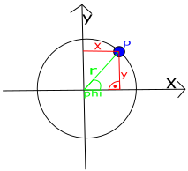
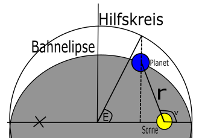
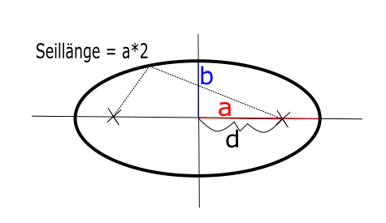
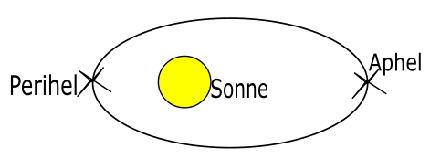

Für Venus, Erde und Neptun ist die Kreisbahn eine recht gute Näherung

Die position des punktion des Punktes P auf einer Kreisbahn kann man in Kartesischen Koordinaten (x,y) aber auch in Polar Koordinaten angeben (r, φ(phi)) angeben, wo r der Radius und φ der winkel zu x-Achse ist.
Es gilt: x = r*cos(φ) denn sin(φ) = y/r, außerdem gilt: y = r*sin(φ) denn sin(φ) = y/r
Auf einer Kreisbahn hat ein Planet eine Konstante Winkelgeschwindigkeit: ω(omega) = φ/t, also φ = ω*t also gilt x = r*cos(ω t) und x = r*sin(ω t) mit ω = v/r = wurzel((G*M)/r)/r = wurzel((G*M)/r³, was man auch im Gravitationsgesetz sehen kann. kennt man die Umlaufzeit, dann verwendet man ω = (2π)/T also x = r*cos(((2π)/T)*t) und x = r*sin(((2π)/T)*t). Hier kann man sich eine Excel Datei mit dem beispiel der Erde herunterladen
Ellipsenbahnen:
Nach dem ersten Kepler-Gesetz bewegen sich die Planeten auf einer Ellipsenbahn um die Sonne. Die Position eines Planeten auf seiner Bahn wird wieder in Polarkoordinaten
r: Abstand zur Sonne (in Astronomischen Einheiten(1 AE = Abstand Erde - Sonne)) ν(ny): wahre Anomalie
angegeben.

Es gilt r = a*(1-e*cos(E)) tan(ν/2) = Wurzel((1+e)/(1-e))*tan(E/2), oder umgeformt ν = arctan(Umkehrfunktion zu tangens)(((1+e)/(1-e))*tan(E/2)) mit a(schon vorher gegeben): große halbachse der Elipse und e(schon vother gegeben): numerische Exzentrität (legt bahnform fest)

e = d/a und 0 kleiner e kleiner 1 E = exzentrische Anomalie (im Bogenmaß angegeben) Die exzentrische Anomalie wird aus der Kepler-Gleichung: E-e*sin(E)=M (in Bogenmaß)(das Problem an der Formel ist, dass sie nur von einem Computerprogramm ausgerechnet werden kann) mit Hilfe der Fixpunktliteration des Newtonverfarens aus e und M berechnet Misst die mittlere Anomalie und wird in Abhängigkeit von der Zeit t berechnet: M = ((2π)/T)(t-to) mit T = Umlaufzeit des Planeten und to = Zeitpunkt des Periheldurchgangs

ist T gegeben kann man jetzt für jeden Zeitpunkt t die Position des Planeten auf seiner Ellipsenbahn berechnung.